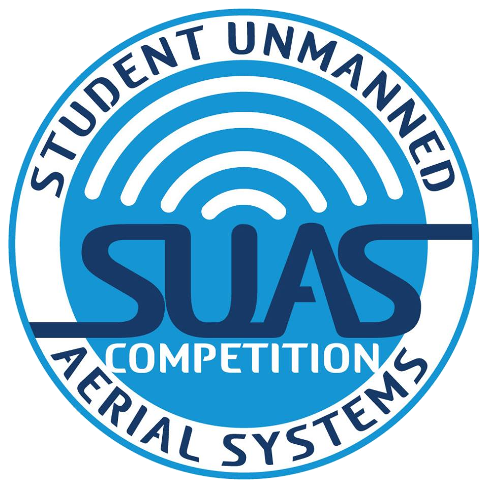

Education
University Of Toronto, Toronto, Ontario
M.Eng emphasizing in Robotics (UTIAS)
September 2023 - 2025
Relevant Coursework:
- Machine Learning
- Motion Planning
- Development of UAS
- Reinforcement Learning
- Cloud Computing
IIIT Delhi, New Delhi, India
B.Tech in ECE
July 2017 - May 2021
Relevant Coursework:
- Robotics
- Machine learning-based real-time control
- Control Theory
- Satellite Navigation and Sensor Fusion
- Data Structures
- Advanced Programming
- Digital Image Processing
Achievements:
-
Recipient of Dean’s Research and Development Award 2020
Awarded for outstanding research contributions in the field of engineering.
-

AUVSI SUAS 2019 (International Unmanned Aerial System Competition)
Top 6 finalists out of 75 teams from around the world.
-
IEEE VTS UAV Innovation Challenge 2020 Qualifier
Qualified for the UAV Innovation Challenge with innovative solutions in UAV technology. Developed a Person reidentification system with drones in collaboration with team members from KTH Royal Sweden, IISER Bhopal, and IIIT Delhi, India.
-
Team Captain - Rocketry Team of IIITD (Aurora UAV IIITD)
Led the development of the rocketry team’s UAV project for national and international competitions.
Work Experience
Senior Software Developer/ Software Engineer
GreyOrange Robotics
July 2021 - August 2023
Designed and implemented software algorithms for motion planning and task scheduling for multiple 800+ mobile robot automated warehouses.
Led the transition to microservices, fostering agility, and scalability improving the efficiency by 30% and enabling the company to acquire new customers and cross the $100 million mark in annual recurring revenue (ARR) in March 2023.
Software Intern
GreyOrange Robotics
April 2021 - June 2021
Worked on the development of motion planning algorithms and contributed to the testing of software systems for automated warehouses.
Course Projects
Model Reference Adaptive Control for Uncertain Dynamics
Designed a model reference adaptive controller to prevent parameter drifting by estimating system parameters. Ensured stability through Lyapunov Based Control Design and explored reinforcement learning-based control systems.
Developed a simulation environment to test the controller using Gazebo/Simulink.
Technical ReportUAV IIITD (Rocketry Team) - Finalist SUAS 2019
Language/Tools: Python, Robot Operating System (ROS), Software in the Loop (SITL), DroneKit-py
Led the development of a long-range unmanned aerial system for fire emergencies, incorporating an obstacle avoidance system and developing an interoperability system.
Prepared images recognition system for competition-specific feature detection tasks, contributing to success in international competitions.
Technical Report GitHubAgent Based Modelling for COVID-19
Developed and optimized Agent-based and compartmental models for COVID-19 scenario simulation, integrated into the interactive COVision dashboard for policymakers.
ABM outperformed CCM in capturing epidemic dynamics, aiding effective policy decisions.
PreprintCertifications
- Introduction to Self-Driving Cars - Coursera (Motion planning, computer vision & Control for self-driving cars)
- SAFe Certified - Scaled Agile Framework for Teams (Agile methodologies for iterative software development cycles)
- Deep Learning and Neural Networks - Coursera
Skills
Programming languages: Python, Erlang, C/C++, Java, Verilog, MATLAB
Tools/Technologies: PyTorch, Numpy, Git, Bash, PyBullet, ROS, Apache Kafka